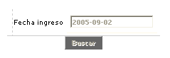
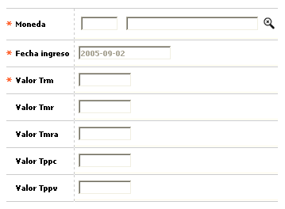
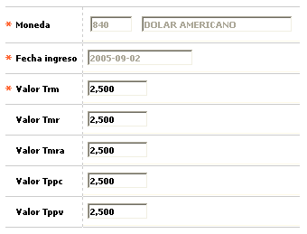

Tasas de cambio |
Mediante esta función se habilita la consulta y mantenimiento de la tabla en la que se almacena diariamente, el tipo de cambio (monto equivalente en moneda oficial respecto de otra moneda) vigente para la fecha a éste asociada, y si lo requiere puede también registrar otros valores relacionados con la tasa de cambio, algunos calculados por la propia entidad y otros determinados por las autoridades monetarias. Dependiendo desde la opción de la cual se invoque, esta tabla puede ser de carácter corporativo o para cada entidad y muestra consecuentemente el calendario, perteneciente a la corporación o entidad, sobre el que es posible navegar hacia atrás mostrando las monedas definidas hasta esa fecha. La forma sólo permite ingresar los valores de los tipos de cambio para la fecha actual (hoy), es decir, que impide ingresar valores para días anteriores o posteriores a la fecha del sistema. Esta opción dispone de un botón especial que permite copiar los valores de las tasas de cambio del día anterior, si existen, para modificar luego, únicamente aquellos que hayan variado, facilitando de ésta manera su actualización; debe tenerse en cuenta que para el correcto funcionamiento del sistema, es necesario realizar diariamente, a primera hora, la actualización de los indicadores básicos
El formulario contiene las opciones Actualizar, Eliminar, Adicionar y Detalle. Adicionalmente, cuenta con un filtro de búsqueda y el botón Copiar indicadores del día anterior.
Filtro: Se pueden realizar consultas a través de las siguientes opciones:

Fecha ingreso |
Despliega la fecha seleccionada del calendario, apareciendo por defecto la del día actual. |
Adicionar: Si el usuario invoca la opción Adicionar se despliega un formulario con los siguientes bloques:

Nombre |
Campo que contiene lista de valores de la cual se selecciona por código o puede buscarse por nombre de moneda aquella para la que se le requiere asociar un monto o tipo de cambio. Al ingresar un código este es validado frente a la lista. |
Fecha ingreso |
Despliega la fecha seleccionada del calendario, apareciendo por defecto la del día actual. |
Valor Trm |
Vr. Tasa representativa del mercado. Campo numérico obligatorio, que en un máximo de siete enteros y dos decimales permite registrar el monto o valor en moneda oficial equivalente a una unidad de la moneda con la que se está relacionando. |
Valor Tmr |
Vr. Tasa más representativa del mercado. Campo numérico no obligatorio, que en un máximo de siete enteros y dos decimales permite registrar el monto o valor en moneda oficial equivalente a una unidad de la moneda con la que se está relacionando, el cual es calculado por la entidad para uso específico. |
Valor Tmra |
Vr. Tasa más representativa del mercado mes anterior. Campo numérico no obligatorio, que en un máximo de siete enteros y dos decimales permite registrar el monto o valor en moneda oficial del mes anterior, equivalente a una unidad de la moneda con la que se está relacionando, el cual es calculado por la entidad para uso específico. |
Valor Tppc |
Vr. Tasa promedio ponderada compra. Campo numérico no obligatorio, que en un máximo de siete enteros y dos decimales permite registrar el monto o valor en moneda oficial equivalente a una unidad de la moneda con la que se está relacionando, el cual es calculado por la entidad para uso específico. |
Valor Tppv |
Vr. Tasa promedio ponderada venta. Campo numérico no obligatorio, que en un máximo de siete enteros y dos decimales permite registrar el monto o valor en moneda oficial equivalente a una unidad de la moneda con la que se está relacionando, el cual es calculado por la entidad para uso específico. |
Actualizar: Si el usuario invoca la opción Actualizar se despliega un nuevo formulario en el cual los únicos campos modificables son: Valor Trm, Valor Tmr, Valor Tmra, Valor Tppc, y Valor Tppv.

Copiar indicadores del día anterior: Botón que permite replicar los valores para los diferentes indicadores económicos definidos el día anterior, si existen, y solamente modificar aquellos cuyos valores hayan variado.